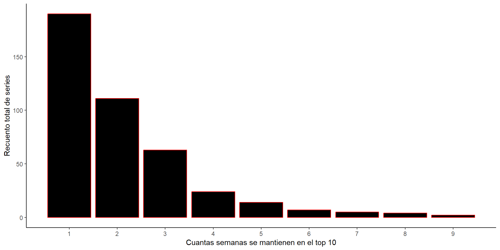

22/12/22
Introducción
Análisis de datos
Otros datos curiosos
Conclusión
En el siguiente trabajo vamos a analizar distintos datos procedentes de las plataformas de películas y series en streaming como Netlix o Amazon, para ello hemos utilizado los datos de la plataforma Kaggle.
Aquí podemos ver la bibliografía utilizada.
Análisis de la producción de las películas
Una comparativa del número de las series y películas de Netflix producidas en los diferentes años.
¿Cual es el país líder en producción de series y películas?
Podemos ver el recuento de series y cuantas semanas seguidas suelen durar.
Recuento de todas las series con determinado número de temporadas
¿Cuáles son los géneros que dominan en las plataformas?
Aquí se observa el número de películas producidas por año en cada género
Los directores que más películas tienen en Netflix
Cuanto es el tiempo media que duran las películas en las plataformas online
Netflix es una plataforma muy grande donde abarca muchos géneros de películas y series muy diversas, con directores de todo tipo. Cabe añadir que últimamente están apareciendo bastantes plataformas en el mercado
Slides hechas con Quarto